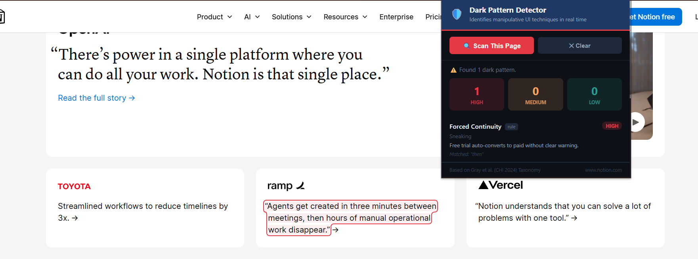
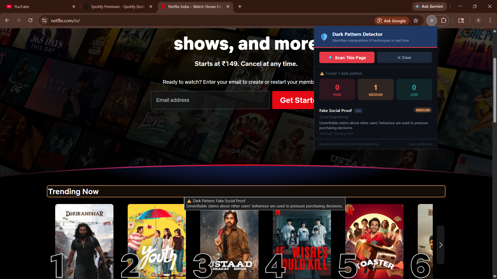

Projects
04 records
Sentinel-Agent v2.0 — Agentic API Monitor
Python · FastAPI · HuggingFace · React · TypeScript
- Designed and built an autonomous API monitoring system with a modular OBSERVE→REASON→ACT→MEMORY pipeline, processing 500+ simulated API events using rule-based + LLM hybrid logic.
- Integrated the HuggingFace Inference API for severity classification, tool selection, and natural-language incident reasoning; cut the false-positive alert rate by ~35% versus a rule-only baseline.
- Built the FastAPI backend and React dashboard with a rule-based fallback path, keeping 100% uptime when the LLM dependency is unavailable — a resilience pattern for production services.
500+ events processed-35% false positives100% fallback uptime


Sprucer — NLP Resume Analyser
Python · NLP · scikit-learn · TF-IDF · Cosine Similarity
- Built an end-to-end resume analysis pipeline scoring candidate-JD fit from raw text; hit 87% classification accuracy across 100+ resumes using TF-IDF + cosine similarity.
- Applied prompt-style decomposition logic to parse unstructured resume sections into classifiable signals — a direct precursor to LLM prompt engineering.
87% accuracy100+ resumes tested


Dark Pattern Detector — Chrome Extension
Python · Flask · JavaScript · Manifest V3
- Built a Chrome extension (Manifest V3) detecting 8 categories of deceptive UI patterns across e-commerce sites, at ~82% precision on a 200-page test set.
- Designed REST + CORS communication between the extension and a Flask API; processed page content at under 300ms average latency.
8 pattern categories~82% precision<300ms latency


Job Portal Application
SQL · MongoDB · Node.js · React · Data Modelling
- Designed a dual-schema architecture — SQL for structured job listings, MongoDB for candidate profiles — supporting efficient filtering and ranking across 300+ mock records.
- Demonstrated multi-source data integration with a unified query layer abstracting relational and document stores.
300+ recordsdual-schema design